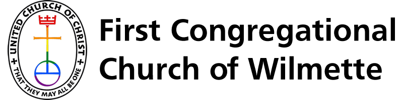

FCCW · Logo Options · Choose One

First Congregational
Church of Wilmette · Est. 1875
Events
Groups
Services
Outreach
Plan a Visit
Option A — UCC Mark + Cormorant Serif
First Congregational
Church of Wilmette · UCC · Est. 1875
Events
Groups
Services
Outreach
Plan a Visit
Option B — Custom Flame Cross + Serif
FC
First Congregational
Church of Wilmette
United Church of Christ · Est. 1875
Events
Groups
Services
Outreach
Plan a Visit
Option C — Cinzel Monogram Badge + Stacked Name